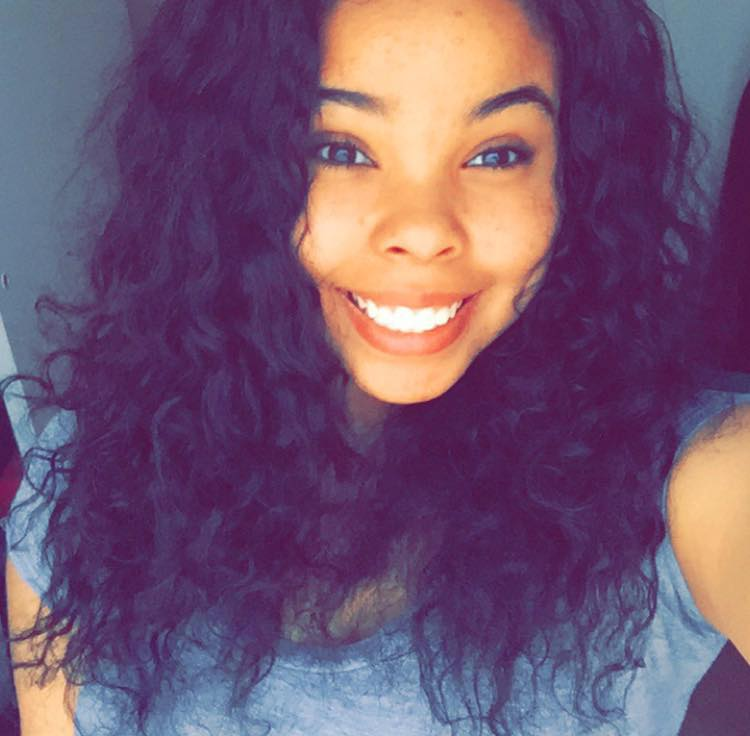

KRYSTAL EVANS
Introduction
My name is Krystal Evans and I'm a fourth year majoring in Psychology and minoring in communications studies and women's studies. I was born in Madison, Wisconsin but I moved to Georgia at the age of eight. I am 21 years old. I attended three high schools but I graduated from Carlton J Kell High School in Marietta, Georgia. I am proud to be the first member of my family to attend college and I intend to graduate in the spring of 2018. My goal is to become an attorney and work in both corporate law and human rights law. This is because I believe that everyone should be treated equally regardless of race, ethnicity, religion, or anything that others may see as different. I want to make the world a more welcoming place for all!
Hobbies and Interests
I enjoying writing and playing the left handed guitar. I also spend a lot of time reading and doing arts and crafts. While I'm not the most skilled artists, I enjoy making small things for family members and loved ones. One form of art that I am skilled at is pottery. Fun fact: my mom has pots around the house that I've made and she likes to hold trinkets in them. I have never left the country, but I intend to travel the world extensively as well as see all fifty states! Since I'm from Wisconsin, I love the snow and cold weather. However, I also enjoy the autumn months. Spring is defintely my least favorite season because of allergies!
Campus Involvement
Since I arrived on campus in 2013, I have been involved in a wide range of activities. I have noticed that my passion lies in community service and mentoring, and I have been involved in those things my entire college career. My two favorite organizations thus far have been Alpha Phi Omega and Black Educational Support Team. Alpha Phi Omega is a national co-ed community service fraternity. Black Educational Support Team is a mentoring program for minority freshmen to have a familiar face and resource when they step foot on campus. I am also an intern in the Solicitor General's office at Athens-Clarke County Courthouse where I work in the victim advocacy section. Look below to see a breakdown of my involvement over the years!
2013-14 2014-15 2015-16 2016-17 SGA Freshman Forum, Freshman Insider Magazine, UGA HEROS UGA HEROS, Black Educational Support Team, Alpha Phi Omega Alpha Phi Omega (Rush Chair), Black Educational Support Team Alpha Phi Omega (President), Black Educational Support Team, Clarke County Courthouse Intern Thanks for reading!